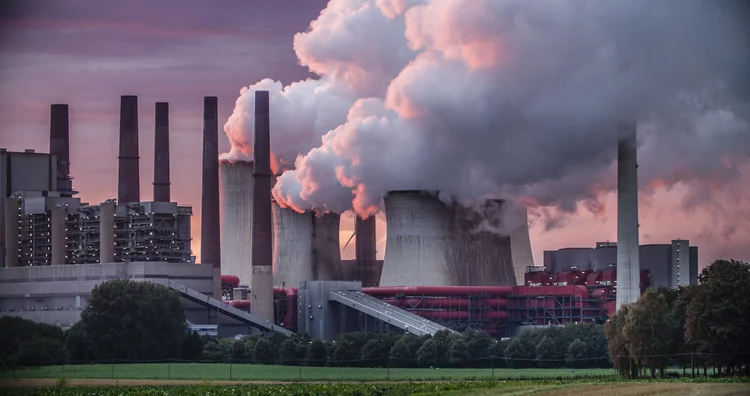
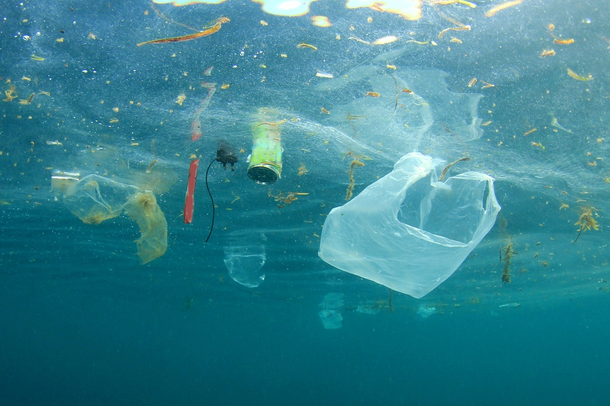
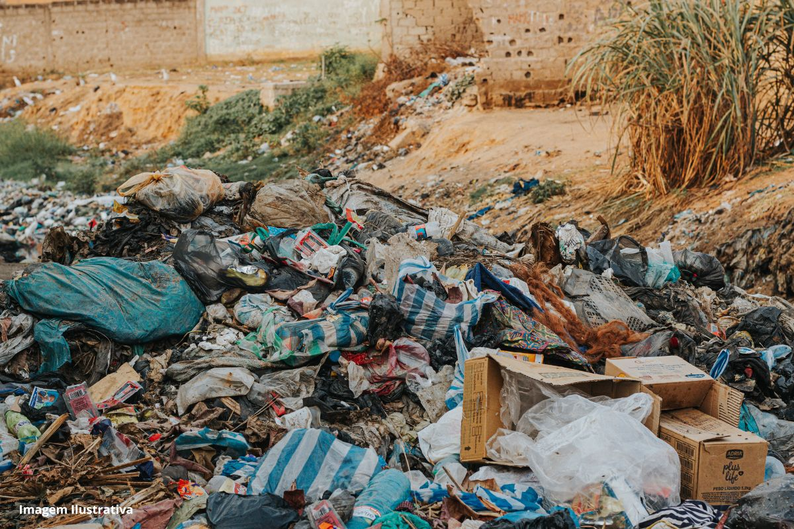
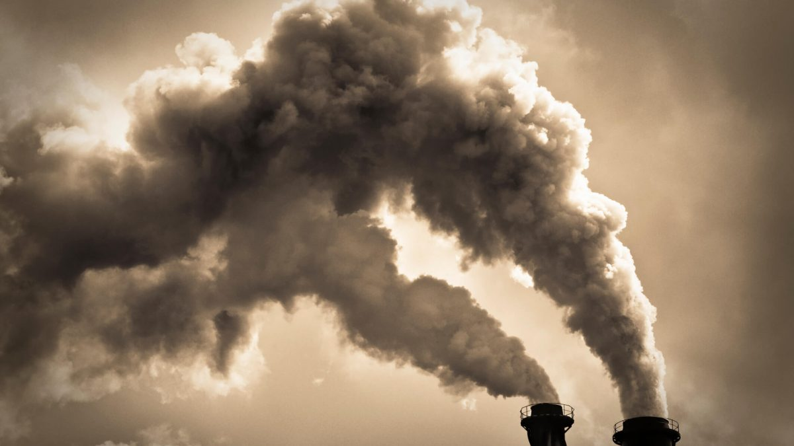
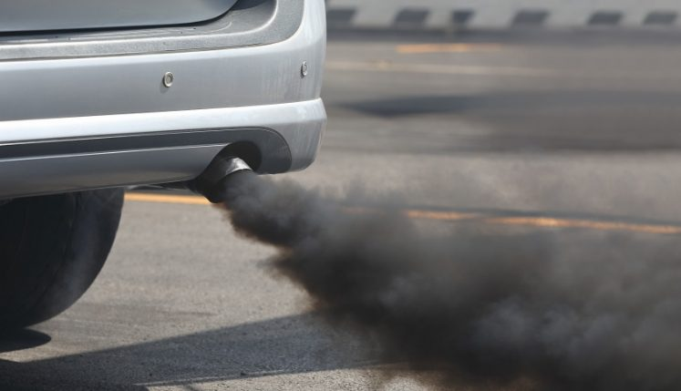

Poluição Ambiental
A poluição ambiental é um dos maiores desafios enfrentados pela humanidade. Ela afeta o ar, a água e o solo, comprometendo a saúde dos seres vivos e o equilíbrio dos ecossistemas.
Poluição do Ar
A poluição do ar é causada pela liberação de substâncias tóxicas na atmosfera, como dióxido de enxofre, óxidos de nitrogênio, monóxido de carbono e partículas finas. Essas emissões resultam principalmente da queima de combustíveis fósseis por veículos, indústrias, termelétricas e queimadas. Ela prejudica a saúde humana, causando doenças respiratórias, cardiovasculares e agravando condições como asma e bronquite. A poluição atmosférica também contribui para o aquecimento global e a chuva ácida, que afeta solos, vegetações e ecossistemas aquáticos. Cidades com alta densidade de veículos e pouca arborização enfrentam picos críticos de má qualidade do ar. Medidas como controle de emissões, incentivo a transportes limpos, fiscalização industrial e ampliação de áreas verdes urbanas são essenciais para combater esse problema.
Poluição da Água
A poluição hídrica compromete a qualidade de rios, lagos e oceanos, prejudicando o abastecimento humano, a fauna aquática e os ecossistemas. Suas principais causas incluem esgoto doméstico sem tratamento, resíduos industriais, agrotóxicos, metais pesados e descarte de lixo diretamente nos corpos d'água. Isso afeta diretamente populações ribeirinhas, agricultura irrigada e o equilíbrio ecológico. Muitos rios urbanos tornaram-se esgotos a céu aberto. Além disso, a poluição hídrica pode causar doenças como cólera, hepatite A e giardíase. A recuperação de rios exige investimentos em saneamento básico, fiscalização ambiental, educação da população e recuperação das matas ciliares que protegem os cursos d'água.
Poluição do Solo
A contaminação do solo é um grave problema ambiental resultante do uso excessivo de agrotóxicos, descarte inadequado de lixo industrial e mineração. Agrotóxicos contaminam a terra, os lençóis freáticos e podem entrar na cadeia alimentar. Já metais pesados como chumbo, mercúrio e cádmio permanecem no solo por décadas, afetando plantas, animais e a saúde humana. Solos contaminados têm sua fertilidade reduzida e tornam-se inadequados para a agricultura e ocupação humana. A descontaminação é cara e demorada, exigindo técnicas como biorremediação ou escavação e substituição. Incentivar práticas agroecológicas, controlar a aplicação de defensivos e regulamentar melhor o descarte industrial são formas de prevenção.
Indústria e Poluição
A atividade industrial é uma das principais responsáveis pela emissão de poluentes atmosféricos, hídricos e sólidos. O processo de produção, especialmente em indústrias químicas, petroquímicas, de papel e siderúrgicas, gera resíduos que, se não forem tratados adequadamente, impactam o meio ambiente. Além da poluição direta, há consumo intensivo de água, energia e uso de matérias-primas não renováveis. Tecnologias limpas, filtros e sistemas de tratamento são alternativas para reduzir os impactos, mas exigem investimento e fiscalização. A responsabilidade ambiental corporativa tem crescido, mas ainda é desigual. Incentivos à inovação e normas mais rigorosas podem direcionar a indústria a caminhos mais sustentáveis.
Transporte e Poluição Urbana
O setor de transporte, sobretudo o individual motorizado, é um grande emissor de gases poluentes e um dos principais causadores da poluição do ar em áreas urbanas. O uso excessivo de carros e motos libera dióxido de carbono, monóxido de carbono e outros poluentes prejudiciais à saúde e ao clima. O trânsito intenso, os engarrafamentos e a falta de transporte público de qualidade agravam o problema. Além disso, o asfalto e a impermeabilização do solo aumentam o calor urbano e dificultam o escoamento de águas pluviais. Promover mobilidade urbana sustentável, com mais ciclovias, transporte coletivo eficiente e veículos elétricos, é essencial para cidades mais limpas e saudáveis.
Como Amenizar?
Amenizar a poluição ambiental requer um conjunto de ações coordenadas entre governo, empresas e sociedade. É fundamental investir em saneamento básico, transporte sustentável, reciclagem, tecnologias limpas e controle rigoroso da poluição industrial e agrícola. A educação ambiental também é uma ferramenta poderosa para conscientizar a população sobre práticas sustentáveis no dia a dia. Políticas públicas devem ser fortalecidas com fiscalização e incentivos a práticas ecológicas. Cidades mais verdes, com arborização e infraestrutura adequada, também colaboram para melhorar a qualidade ambiental. Cada ação individual — como reduzir o uso de plástico, andar menos de carro e separar o lixo corretamente — contribui para um planeta menos poluído.